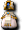

官方公告
活動怪物
6週年使節團
間諜
圖像
外觀
 染色劑
染色劑
其他
留言
官方公告
【概要】
為紀念神之領域6週年，似乎有個使節團來到了麥索西亞。
遇到使節團的人，會獲贈各種紀念品。
找出使節團來獲得道具吧！！
傳聞聽說使節團的消息後，有間諜被派了進來……。
為了讓使節團的來訪平安結束，也請找出間諜吧。
使用NPC「德雷恩」販賣的道具「間諜探索器」，
就能找出混入使節團的間諜。
【期間】
2009年8月5日（三）～2009年9月2日（三）
【獎品】
遊戲內稀有道具
6週年紀念外觀「阿拉伯服」
【補充】
6週年使節團會大量出現在某個城鎮（城鎮每個整點0分，以1小時為週期移動）
相鄰時會伴隨愛心特效消失，並獲得道具（有銘謝惠顧）。
在相鄰之前，使用可在交流廣場的德雷恩處買到的「間諜探測器」（用法如同魔法），
會變化成間諜，打倒它又會掉落另一種道具。
使節團HP有99,999,999，所以攻擊也沒意義。即使從遠距離取得目標，
只要有人相鄰就會消失，有人使用探測器變成間諜後目標也會重置。
並不是有會變成間諜的和不會變成間諜的，
而是使用探測器數次後必定會變成間諜。
活動怪物
6週年使節團
| 6週年使節團 | Lv | AC | MC | AAR | SAR | 相鄰道具 |
| HP:99,999,999 | 120 | -100 | -100 | 20 | 20 | 不是掉落，而是相鄰時取得的道具攻擊衝擊(50次,100次,150次)增益衝擊(30次,50次)魔法衝擊(50次,)道具加成[1]、道具加成[2]、道具加成[3]、 金幣加成[1]、金幣加成[2]、金幣加成[3]、 金幣加成[1]、金幣加成[2]、金幣加成[3]、 經驗加成[1]、經驗加成[2]、經驗加成[3]、 經驗加成[1]、經驗加成[2]、經驗加成[3]、 鯊魚湯、白帶魚湯、 鯊魚湯、白帶魚湯、 河豚火鍋、 河豚火鍋、 水煮龍蝦、 水煮龍蝦、 氣力回復藥水，外觀越高階的會出越高階的道具 氣力回復藥水，外觀越高階的會出越高階的道具 |
| 經驗值 | 名聲值 | 金錢 | 攻擊屬性 | 防禦屬性 | ||
| - | - | - | 隨機 | 隨機 | ||
| STR | DEX | INT | WIS | CON | ||
| 99 | 99 | 99 | 99 | 99 |
備註:
間諜
| 間諜 | Lv | AC | MC | AAR | SAR | 掉落物品 |
| HP:5,000 | 70 | 70 | 100 | 0 | 0 | 鯊魚湯、白帶魚湯、河豚火鍋、水煮龍蝦、 特殊染色劑[魅力紅]、特殊染色劑[深藍色]、 特殊染色劑[魅力紅]、特殊染色劑[深藍色]、 特殊染色劑[亮金色]、 特殊染色劑[亮金色]、 特殊染色劑[亮粉紅]、 特殊染色劑[亮粉紅]、 特殊染色劑[魅力銀]、冰凍之劍、冰霜之斧、冰霜匕首、 特殊染色劑[魅力銀]、冰凍之劍、冰霜之斧、冰霜匕首、 冰霜長鞭、冰霜寶珠、 冰霜長鞭、冰霜寶珠、 冰霜法杖、 冰霜法杖、 冰霜拳套、冰霜豎琴、冰霜長槍、冰霜雙刃、 冰霜拳套、冰霜豎琴、冰霜長槍、冰霜雙刃、 冰霜牌組、冰凍彎刀、 冰霜牌組、冰凍彎刀、 神之領域6週年紀念盒[服裝] 神之領域6週年紀念盒[服裝] |
| 經驗值 | 名聲值 | 金錢 | 攻擊屬性 | 防禦屬性 | ||
| 500 | 500 | 1000 | 隨機 | 隨機 | ||
| STR | DEX | INT | WIS | CON | ||
| 21 | 21 | 21 | 21 | 81 |
備註:使用間諜探測器後出現
圖像
外觀
 阿拉伯服(男) | 阿拉伯服(女) | 冰凍之劍 | 冰凍之斧 | 冰凍匕首 |
| 冰凍長鞭 | 冰凍法珠 | 冰凍法杖 | 冰凍指虎 | 冰凍豎琴 |
| 冰凍長槍 | 冰凍牌組 | 冰凍二重奏 | 冰霜雙刃（劍化） | 冰凍彎刀 |
※鼻眼鏡是活動「奪回被偷走的寶箱！！」的褒賞
染色劑
| 特殊染色劑[魅力紅] | 特殊染色劑[深藍色] |
| 特殊染色劑[亮金色] | 特殊染色劑[亮粉紅] |
特殊染色劑[魅力銀]
其他
武器外觀
冰霜系武器外觀期限為30天，附專屬功能，僅可交易1次
附帶少許附魔效果。例如冰霜法杖有HP10,MP5,MDAM1%,魔法持續時間增加1%
與雷電系外觀一樣有技能限制。例如鞭子外觀，即使內容換成短劍也不能使用短劍技能
神之領域6週年紀念盒[服裝]
雙擊後會變成符合角色性別的阿拉伯服(無期限外觀)
盒子狀態有效期限1週，不可交易
變成外觀狀態後也不可交易
城鎮移動順序
看了約1天的份，似乎是隨機的
同一個城鎮不會連續出現？
關於使節團
經過一定時間會自然消失 相當短 大約１分鐘？
留言
目前顯示最新的10件。請參閱留言頁面
對剛出現的使節團用了12個探測器，所以消耗與出現成正比之類的說法應該是誤會 -- 茲? 2009-08-09 (日) 10:59:44
我想也存在用很多也不會變成間諜的銘謝惠顧類型…… -- 2009-08-16 (日) 03:23:21
↑快消失的使節團用了10個以上也不會變化，看著看著就消失了 -- 2009-08-16 (日) 20:22:46
&#